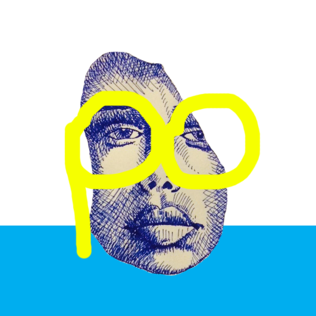

About
As a graphic and UI/UX designer who has been closely cooperate with programmers for 2 years, I have developed various productivity techniques to maximize my contribution to the team.
-
Managing overlapping developing cycles.
-
Identifying clients' practical needs from their ambiguous and abstract feedback.
-
Minimizing extra code works derived from UI/UX improvement